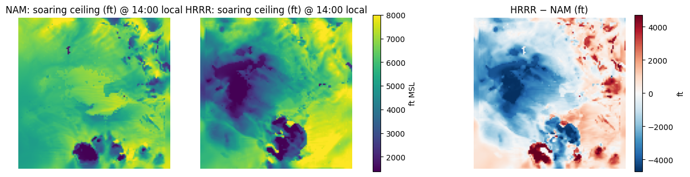
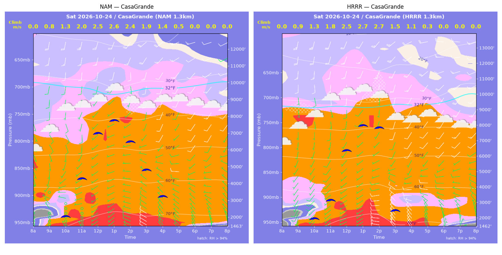
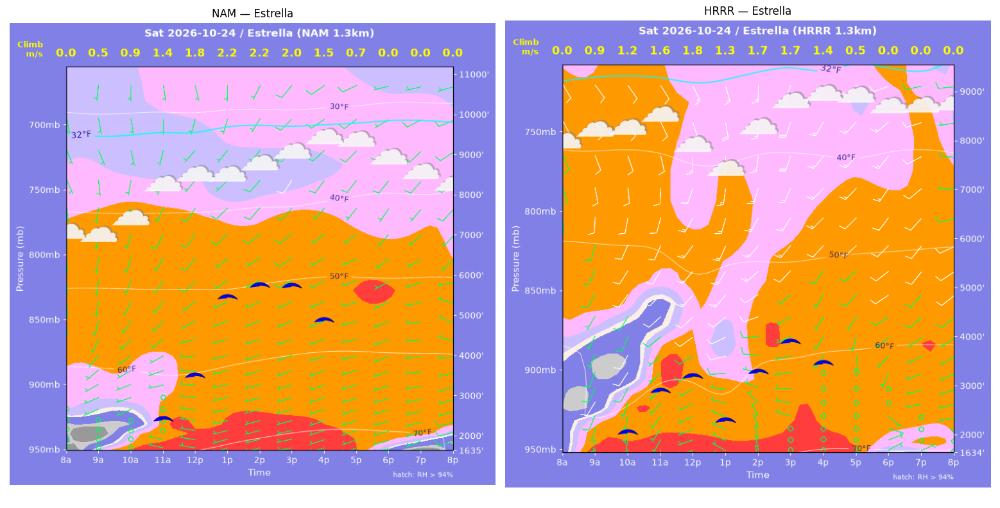
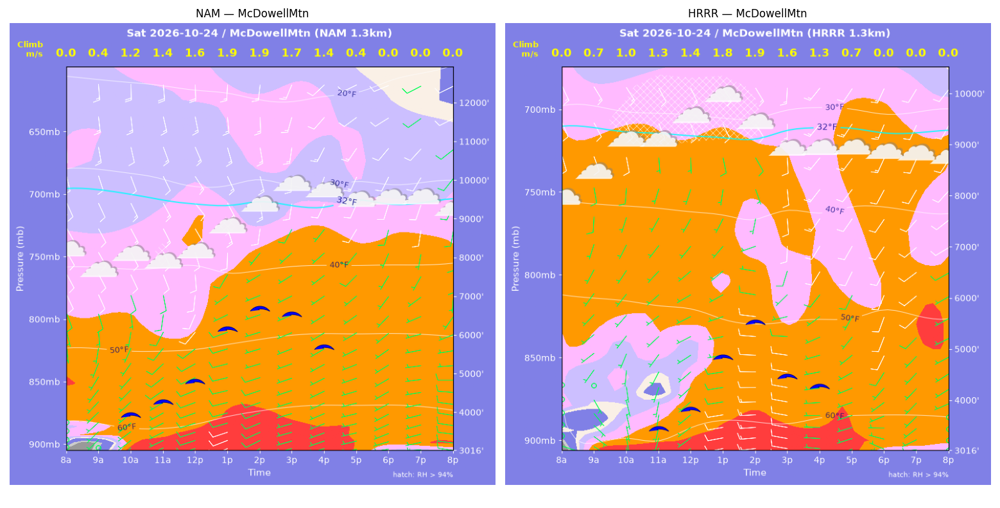
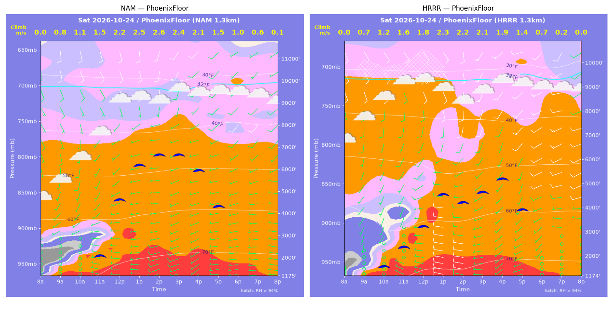
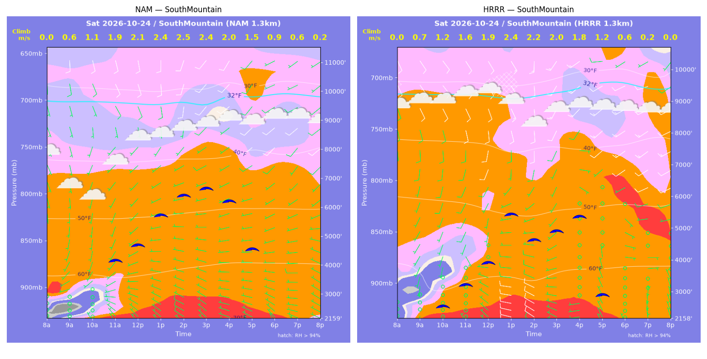
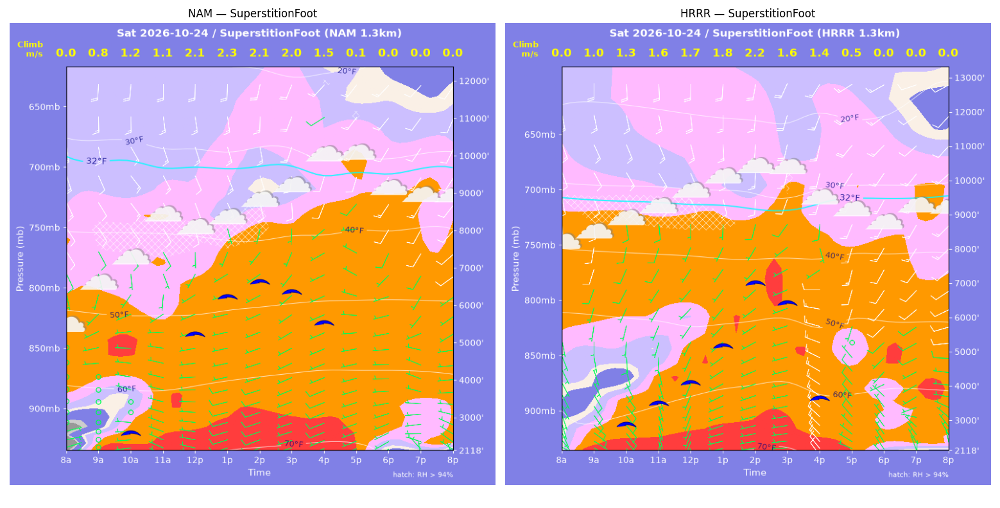
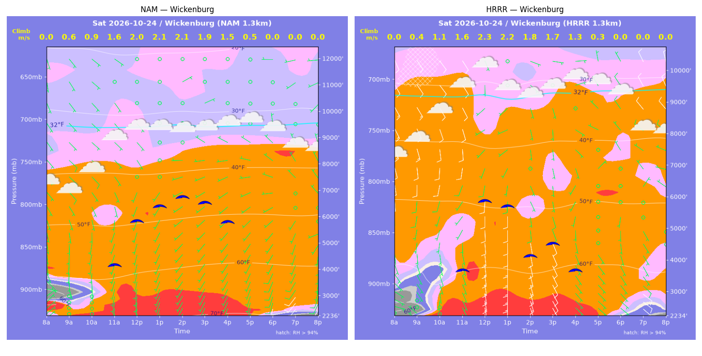

../runs/ab-phoenix-nam — model nam, cycle 2026-10-23 18z, dx 1.3333333740234374 km, 13 hours, grid 114×114../runs/ab-phoenix-hrrr — model hrrr, cycle 2026-10-23 18z, dx 1.3333333740234374 km, 13 hours, grid 114×114Grids identical; afternoon = 12:00–17:59 local (UTC-7). Δ = HRRR − NAM.
| Site | terrain ft | BL top (AGL) med|Δ| / bias (ft) | w* med|Δ| / bias (fpm) | Soaring ceiling med|Δ| / bias (ft) | BL wind speed med|Δ| / bias (kt) | BL wind dir med|Δ| / bias (deg) | 2 m temperature med|Δ| / bias (F) | Sfc LCL (AGL) med|Δ| / bias (ft) | Sensible heat flux med|Δ| / bias (W/m2) |
|---|---|---|---|---|---|---|---|---|---|
| PhoenixFloor | 1176 | 1914 / -1803 | 54 / -48 | 1480 / -1405 | 2 / +3 | 14 / +0 | 2 / -2 | 317 / -317 | 21 / -4 |
| SouthMountain | 2159 | 1539 / -1496 | 45 / -40 | 1220 / -1151 | 3 / -2 | 42 / -1 | 2 / -2 | 279 / +122 | 17 / +7 |
| SuperstitionFoot | 2119 | 1009 / -764 | 71 / -34 | 712 / -597 | 2 / +1 | 37 / +40 | 1 / -1 | 1343 / +747 | 52 / -38 |
| Estrella | 1635 | 2829 / -2581 | 48 / -65 | 1598 / -1501 | 4 / +3 | 14 / +2 | 3 / -3 | 417 / -486 | 3 / -7 |
| Wickenburg | 2236 | 3090 / -2656 | 39 / -13 | 1305 / -1190 | 3 / +2 | 111 / -71 | 2 / -2 | 184 / +267 | 59 / +49 |
| CasaGrande | 1463 | 1343 / -927 | 47 / -20 | 969 / -529 | 2 / +2 | 32 / +11 | 1 / -1 | 670 / +233 | 18 / +18 |
| McDowellMtn | 3017 | 2099 / -2332 | 20 / -4 | 1199 / -1126 | 3 / -2 | 34 / +30 | 2 / -2 | 778 / +155 | 51 / +51 |
| Metric | n | median |Δ| | p90 |Δ| | bias |
|---|---|---|---|---|
| BL top (AGL) (ft) | 42 | 1959 | 3392 | -1794 |
| w* (fpm) | 42 | 41 | 84 | -32 |
| Soaring ceiling (ft) | 42 | 1199 | 2287 | -1071 |
| BL wind speed (kt) | 42 | 2 | 5 | +1 |
| BL wind dir (deg) | 42 | 29 | 93 | +2 |
| 2 m temperature (F) | 42 | 2 | 3 | -2 |
| Sfc LCL (AGL) (ft) | 42 | 477 | 1245 | +103 |
| Sensible heat flux (W/m2) | 42 | 23 | 77 | +11 |
diffmap_tol.png| local | BL top NAM/HRRR ft | w* NAM/HRRR fpm | ceiling NAM/HRRR ft | BL wind NAM/HRRR | T2 NAM/HRRR F | HFX NAM/HRRR |
|---|---|---|---|---|---|---|
| 08:00 | 0 / 0 | 0 / 0 | 1176 / 1175 | 2kt@053 / 3kt@122 | 63 / 62 | 0 / 0 |
| 09:00 | 878 / 667 | 156 / 134 | 1176 / 1175 | 2kt@081 / 2kt@177 | 67 / 66 | 67 / 55 |
| 10:00 | 1322 / 1565 | 220 / 236 | 1176 / 1627 | 1kt@224 / 4kt@208 | 70 / 69 | 125 / 130 |
| 11:00 | 1967 / 2373 | 288 / 311 | 2132 / 2440 | 5kt@263 / 4kt@200 | 72 / 71 | 188 / 197 |
| 12:00 | 5223 / 3504 | 431 / 359 | 4646 / 3280 | 7kt@231 / 8kt@234 | 75 / 73 | 240 / 207 |
| 13:00 | 7138 / 5029 | 496 / 455 | 6186 / 4592 | 5kt@230 / 4kt@233 | 76 / 74 | 267 / 292 |
| 14:00 | 7751 / 4641 | 503 / 436 | 6642 / 4272 | 6kt@186 / 8kt@224 | 77 / 74 | 257 / 278 |
| 15:00 | 7911 / 5428 | 479 / 409 | 6660 / 4690 | 4kt@193 / 9kt@198 | 78 / 75 | 218 / 197 |
| 16:00 | 7431 / 6529 | 404 / 378 | 5959 / 5228 | 7kt@222 / 8kt@199 | 78 / 75 | 139 / 130 |
| 17:00 | 6444 / 5948 | 291 / 280 | 4360 / 3959 | 6kt@242 / 13kt@219 | 77 / 75 | 60 / 58 |
| 18:00 | 6035 / 3019 | 192 / 133 | 1176 / 1175 | 9kt@220 / 8kt@246 | 76 / 74 | 18 / 12 |
| 19:00 | 5504 / 1554 | 124 / 38 | 1176 / 1175 | 6kt@230 / 1kt@309 | 76 / 74 | 5 / 1 |
| 20:00 | 258 / 426 | 16 / 0 | 1176 / 1175 | 6kt@273 / 2kt@025 | 75 / 73 | 0 / -0 |
| local | BL top NAM/HRRR ft | w* NAM/HRRR fpm | ceiling NAM/HRRR ft | BL wind NAM/HRRR | T2 NAM/HRRR F | HFX NAM/HRRR |
|---|---|---|---|---|---|---|
| 08:00 | 0 / 0 | 0 / 0 | 2159 / 2159 | 1kt@276 / 2kt@130 | 63 / 63 | 0 / 0 |
| 09:00 | 445 / 844 | 119 / 143 | 2159 / 2159 | 1kt@248 / 3kt@184 | 65 / 65 | 59 / 53 |
| 10:00 | 1018 / 1543 | 210 / 236 | 2159 / 2610 | 2kt@250 / 6kt@194 | 66 / 66 | 139 / 132 |
| 11:00 | 3375 / 2129 | 367 / 312 | 4216 / 3296 | 7kt@199 / 4kt@166 | 68 / 68 | 227 / 219 |
| 12:00 | 3974 / 2930 | 414 / 380 | 4748 / 3982 | 7kt@221 / 4kt@185 | 69 / 69 | 275 / 289 |
| 13:00 | 5250 / 4848 | 465 / 472 | 5759 / 5502 | 6kt@229 / 5kt@180 | 71 / 70 | 296 / 335 |
| 14:00 | 6154 / 3851 | 484 / 429 | 6444 / 4710 | 6kt@212 / 6kt@221 | 72 / 69 | 286 / 316 |
| 15:00 | 6616 / 4424 | 464 / 397 | 6691 / 4979 | 9kt@220 / 6kt@198 | 72 / 70 | 234 / 218 |
| 16:00 | 6383 / 5385 | 400 / 364 | 6248 / 5422 | 6kt@219 / 4kt@135 | 72 / 70 | 156 / 139 |
| 17:00 | 5020 / 2986 | 288 / 235 | 4609 / 2996 | 7kt@240 / 2kt@057 | 72 / 69 | 74 / 67 |
| 18:00 | 3280 / 1505 | 176 / 116 | 2159 / 2159 | 6kt@250 / 3kt@084 | 71 / 69 | 26 / 16 |
| 19:00 | 2553 / 402 | 126 / 47 | 2159 / 2159 | 7kt@268 / 4kt@355 | 71 / 68 | 12 / 4 |
| 20:00 | 229 / 556 | 41 / 0 | 2159 / 2159 | 7kt@293 / 4kt@344 | 70 / 68 | 5 / -0 |
| local | BL top NAM/HRRR ft | w* NAM/HRRR fpm | ceiling NAM/HRRR ft | BL wind NAM/HRRR | T2 NAM/HRRR F | HFX NAM/HRRR |
|---|---|---|---|---|---|---|
| 08:00 | 0 / 0 | 0 / 0 | 2119 / 2119 | 4kt@070 / 7kt@110 | 61 / 62 | 0 / 0 |
| 09:00 | 851 / 1265 | 149 / 187 | 2119 / 2119 | 1kt@003 / 8kt@145 | 66 / 66 | 59 / 79 |
| 10:00 | 1622 / 1995 | 241 / 262 | 2643 / 2947 | 3kt@284 / 9kt@156 | 68 / 67 | 133 / 138 |
| 11:00 | 3019 / 2682 | 222 / 316 | 2119 / 3572 | 5kt@265 / 7kt@184 | 70 / 69 | 56 / 180 |
| 12:00 | 4824 / 3622 | 414 / 329 | 5263 / 4156 | 4kt@200 / 6kt@216 | 71 / 70 | 228 / 151 |
| 13:00 | 6102 / 5288 | 454 / 346 | 6261 / 5208 | 8kt@165 / 6kt@214 | 72 / 72 | 237 / 119 |
| 14:00 | 6932 / 7315 | 417 / 441 | 6655 / 7025 | 10kt@166 / 11kt@185 | 73 / 72 | 163 / 180 |
| 15:00 | 6692 / 7924 | 398 / 320 | 6393 / 6459 | 10kt@176 / 10kt@201 | 73 / 72 | 146 / 63 |
| 16:00 | 7010 / 3643 | 291 / 270 | 5574 / 3716 | 9kt@203 / 13kt@283 | 73 / 70 | 54 / 82 |
| 17:00 | 2806 / 1991 | 27 / 92 | 2119 / 2119 | 5kt@260 / 7kt@312 | 72 / 69 | -0 / 5 |
| 18:00 | 289 / 676 | 0 / 0 | 2119 / 2119 | 5kt@241 / 6kt@323 | 67 / 66 | -0 / -3 |
| 19:00 | 83 / 296 | 0 / 0 | 2119 / 2119 | 4kt@347 / 4kt@327 | 66 / 65 | -2 / -2 |
| 20:00 | 354 / 375 | 0 / 0 | 2119 / 2119 | 5kt@305 / 5kt@343 | 64 / 64 | -3 / -4 |
| local | BL top NAM/HRRR ft | w* NAM/HRRR fpm | ceiling NAM/HRRR ft | BL wind NAM/HRRR | T2 NAM/HRRR F | HFX NAM/HRRR |
|---|---|---|---|---|---|---|
| 08:00 | 0 / 0 | 0 / 0 | 1635 / 1635 | 1kt@187 / 3kt@236 | 60 / 62 | 0 / 0 |
| 09:00 | 352 / 1025 | 98 / 171 | 1635 / 1635 | 1kt@130 / 9kt@207 | 66 / 65 | 41 / 74 |
| 10:00 | 858 / 1548 | 175 / 242 | 1635 / 2139 | 2kt@235 / 10kt@210 | 68 / 67 | 95 / 140 |
| 11:00 | 1994 / 2542 | 268 / 311 | 2497 / 2988 | 5kt@249 / 9kt@232 | 70 / 69 | 147 / 181 |
| 12:00 | 3319 / 2831 | 346 / 347 | 3575 / 3295 | 6kt@239 / 12kt@229 | 72 / 69 | 191 / 228 |
| 13:00 | 5867 / 1982 | 426 / 254 | 5512 / 2400 | 8kt@225 / 13kt@256 | 73 / 68 | 203 / 127 |
| 14:00 | 6314 / 3062 | 424 / 334 | 5796 / 3377 | 9kt@220 / 12kt@239 | 74 / 70 | 186 / 188 |
| 15:00 | 6577 / 4171 | 387 / 328 | 5772 / 3973 | 9kt@214 / 14kt@218 | 75 / 72 | 136 / 131 |
| 16:00 | 6337 / 4415 | 305 / 268 | 4941 / 3544 | 7kt@219 / 11kt@225 | 75 / 72 | 68 / 67 |
| 17:00 | 5630 / 2096 | 136 / 99 | 1635 / 1635 | 7kt@230 / 3kt@192 | 74 / 72 | 6 / 7 |
| 18:00 | 814 / 295 | 0 / 0 | 1635 / 1635 | 7kt@253 / 3kt@086 | 70 / 68 | -2 / -6 |
| 19:00 | 368 / 84 | 0 / 0 | 1635 / 1635 | 7kt@246 / 6kt@074 | 69 / 67 | -0 / -3 |
| 20:00 | 495 / 84 | 0 / 0 | 1635 / 1635 | 8kt@254 / 4kt@086 | 67 / 66 | -0 / -2 |
| local | BL top NAM/HRRR ft | w* NAM/HRRR fpm | ceiling NAM/HRRR ft | BL wind NAM/HRRR | T2 NAM/HRRR F | HFX NAM/HRRR |
|---|---|---|---|---|---|---|
| 08:00 | 0 / 0 | 0 / 0 | 2236 / 2235 | 5kt@047 / 3kt@282 | 58 / 57 | 0 / 0 |
| 09:00 | 737 / 257 | 118 / 70 | 2236 / 2235 | 1kt@056 / 4kt@306 | 64 / 62 | 32 / 20 |
| 10:00 | 1219 / 1397 | 183 / 213 | 2236 / 2235 | 5kt@178 / 8kt@160 | 67 / 66 | 74 / 105 |
| 11:00 | 3686 / 2777 | 313 / 319 | 4212 / 3751 | 4kt@185 / 5kt@208 | 69 / 69 | 123 / 178 |
| 12:00 | 5714 / 5484 | 393 / 446 | 5863 / 5932 | 3kt@177 / 6kt@227 | 71 / 71 | 159 / 248 |
| 13:00 | 6420 / 5308 | 415 / 435 | 6424 / 5775 | 1kt@201 / 4kt@227 | 71 / 70 | 166 / 238 |
| 14:00 | 6965 / 3280 | 411 / 364 | 6757 / 4221 | 1kt@309 / 6kt@167 | 72 / 70 | 148 / 225 |
| 15:00 | 7041 / 4057 | 372 / 344 | 6560 / 4599 | 3kt@301 / 5kt@171 | 72 / 70 | 108 / 154 |
| 16:00 | 7033 / 3837 | 299 / 258 | 5829 / 3765 | 4kt@296 / 4kt@204 | 72 / 70 | 55 / 68 |
| 17:00 | 6220 / 1491 | 99 / 62 | 2236 / 2235 | 4kt@280 / 4kt@141 | 71 / 69 | 1 / 2 |
| 18:00 | 1341 / 616 | 0 / 0 | 2236 / 2235 | 8kt@201 / 6kt@131 | 68 / 64 | -6 / -5 |
| 19:00 | 745 / 669 | 0 / 0 | 2236 / 2235 | 9kt@217 / 11kt@128 | 66 / 62 | -7 / -8 |
| 20:00 | 540 / 499 | 0 / 0 | 2236 / 2235 | 9kt@204 / 9kt@129 | 65 / 61 | -12 / -9 |
| local | BL top NAM/HRRR ft | w* NAM/HRRR fpm | ceiling NAM/HRRR ft | BL wind NAM/HRRR | T2 NAM/HRRR F | HFX NAM/HRRR |
|---|---|---|---|---|---|---|
| 08:00 | 0 / 0 | 0 / 0 | 1463 / 1463 | 1kt@117 / 4kt@183 | 64 / 61 | 0 / 0 |
| 09:00 | 809 / 835 | 155 / 172 | 1463 / 1463 | 2kt@317 / 8kt@206 | 69 / 67 | 70 / 94 |
| 10:00 | 1721 / 1459 | 250 / 251 | 2092 / 2008 | 3kt@287 / 8kt@230 | 72 / 70 | 139 / 169 |
| 11:00 | 4539 / 2947 | 388 / 347 | 4323 / 3191 | 8kt@181 / 8kt@222 | 74 / 73 | 200 / 221 |
| 12:00 | 7879 / 7047 | 493 / 487 | 6984 / 6380 | 7kt@213 / 8kt@189 | 76 / 75 | 237 / 256 |
| 13:00 | 8853 / 9097 | 513 / 528 | 7749 / 7984 | 8kt@211 / 10kt@204 | 77 / 76 | 238 / 254 |
| 14:00 | 7328 / 8915 | 467 / 522 | 6496 / 7829 | 5kt@227 / 7kt@181 | 76 / 77 | 217 / 250 |
| 15:00 | 5414 / 2142 | 382 / 294 | 4845 / 2533 | 5kt@216 / 10kt@308 | 76 / 73 | 160 / 185 |
| 16:00 | 3939 / 1750 | 278 / 224 | 3288 / 1463 | 4kt@276 / 9kt@287 | 76 / 73 | 85 / 101 |
| 17:00 | 2444 / 1345 | 93 / 53 | 1463 / 1463 | 7kt@289 / 7kt@328 | 75 / 72 | 5 / 2 |
| 18:00 | 1053 / 783 | 0 / 0 | 1463 / 1463 | 7kt@318 / 7kt@337 | 70 / 67 | -3 / -2 |
| 19:00 | 383 / 268 | 0 / 0 | 1463 / 1463 | 5kt@343 / 5kt@023 | 69 / 65 | -2 / -2 |
| 20:00 | 84 / 84 | 0 / 0 | 1463 / 1463 | 3kt@004 / 4kt@036 | 68 / 64 | -1 / -2 |
| local | BL top NAM/HRRR ft | w* NAM/HRRR fpm | ceiling NAM/HRRR ft | BL wind NAM/HRRR | T2 NAM/HRRR F | HFX NAM/HRRR |
|---|---|---|---|---|---|---|
| 08:00 | 0 / 0 | 0 / 0 | 3017 / 3016 | 1kt@091 / 3kt@087 | 60 / 60 | 0 / 0 |
| 09:00 | 253 / 680 | 70 / 132 | 3017 / 3016 | 2kt@240 / 5kt@134 | 63 / 62 | 18 / 51 |
| 10:00 | 3019 / 1159 | 241 / 205 | 3990 / 3016 | 6kt@191 / 4kt@164 | 65 / 63 | 65 / 111 |
| 11:00 | 2834 / 1419 | 279 / 249 | 4334 / 3531 | 8kt@219 / 5kt@196 | 65 / 63 | 110 / 164 |
| 12:00 | 3385 / 1927 | 318 / 280 | 4863 / 3917 | 9kt@219 / 4kt@237 | 66 / 64 | 137 / 172 |
| 13:00 | 5232 / 3239 | 367 / 351 | 6206 / 4929 | 11kt@183 / 6kt@242 | 67 / 66 | 136 / 202 |
| 14:00 | 6078 / 4154 | 368 / 380 | 6722 / 5603 | 10kt@188 / 4kt@252 | 68 / 66 | 117 / 201 |
| 15:00 | 6304 / 2909 | 332 / 309 | 6585 / 4557 | 8kt@208 / 7kt@258 | 68 / 65 | 82 / 154 |
| 16:00 | 6386 / 3366 | 266 / 258 | 5751 / 4369 | 7kt@217 / 9kt@216 | 68 / 65 | 40 / 77 |
| 17:00 | 5208 / 3004 | 87 / 137 | 3017 / 3016 | 8kt@219 / 8kt@208 | 67 / 65 | -1 / 13 |
| 18:00 | 975 / 794 | 0 / 0 | 3017 / 3016 | 6kt@248 / 5kt@245 | 65 / 63 | -2 / -1 |
| 19:00 | 1256 / 82 | 0 / 0 | 3017 / 3016 | 6kt@259 / 2kt@326 | 63 / 62 | -3 / -0 |
| 20:00 | 2077 / 82 | 0 / 0 | 3017 / 3016 | 8kt@271 / 3kt@021 | 62 / 61 | -4 / -1 |
montage_PhoenixFloor.pngmontage_SouthMountain.pngmontage_SuperstitionFoot.pngmontage_Estrella.pngmontage_Wickenburg.pngmontage_CasaGrande.pngmontage_McDowellMtn.png